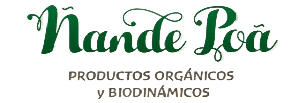

La agricultura biodinámica es un método de agricultura ecológica basado en las teorías de Rudolf Steiner. Este tipo de agricultura propone una forma de desarrollar las labores agroindustriales, utilizando de forma responsable los recursos naturales, sin emplear sustancias químicas como fertilizantes, pesticidas o transgénicos. Considera las granjas como organismos complejos y resalta la interrelación entre suelos, plantas y animales, tratando el conjunto como un sistema en equilibrio y siguiendo un calendario de siembra que toma en cuenta las influencias de los astros para la realización de las labores agrícolas y pecuarias.